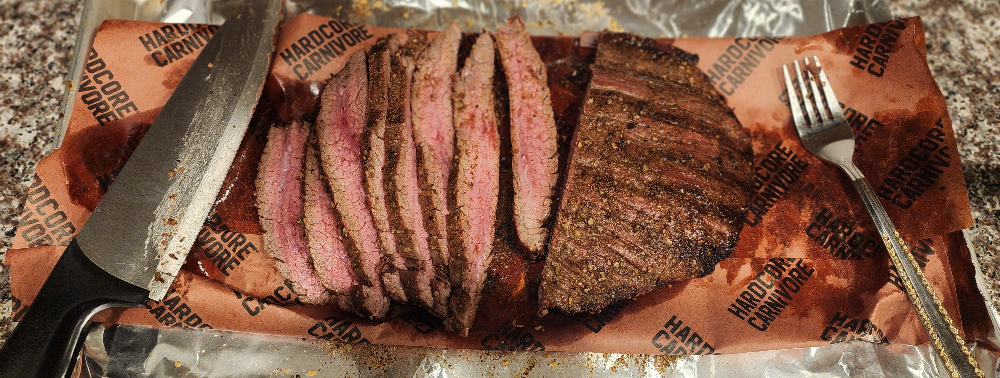

The Seasoning
I kept the seasoning simple yet bold to let the beef shine. I used Kinder’s The Blend (salt, pepper, and garlic) as the base and then added:
- Oregano for a bit of earthiness
- Cumin for that smoky depth
- Chili powder for just the right amount of heat
This combination created a beautiful crust on the steak while enhancing its natural richness.
Grilling the Flank Steak
Since flank steak is a thinner cut, it cooks fairly quickly. I grilled it on my Weber Spirit E310 gas grill for consistency and easy temperature control.
Here’s how it went down:
- Preheated the grill to medium-high heat.
- Grilled for about 16 minutes, flipping every 4 minutes to get an even cook and a nice sear.
- Aimed for medium to medium-well doneness. The steak tapers at the edges, so some pieces ended up more well-done.
Resting & Slicing
Once off the grill, I wrapped the steak in butcher paper and let it rest for about 10 minutes. This step is crucial for keeping the juices locked in.
When slicing, I made sure to cut against the grain for the most tender bites.
Final Thoughts
These flank steak tacos were a hit, and I’ll definitely be making them again. Next time, I might experiment with a citrus-based marinade for a different flavor profile.